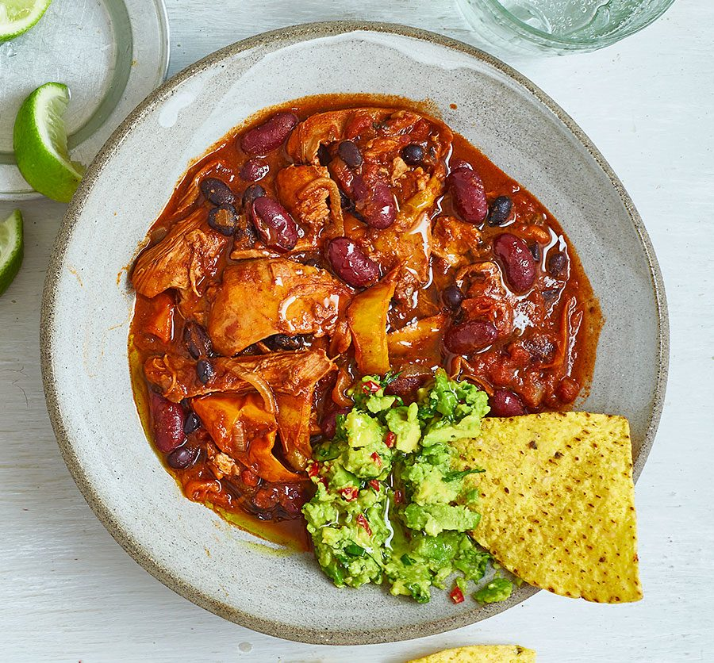

Chicken chilli
Chicken chilli
con carne
Ingredients
- 2 tbsp olive oil
- 1 onion, sliced
- 2 mixed peppers, sliced (use red, yellow or orange peppers)
- 2 large garlic cloves, crushed
- 1 small bunch of coriander, stalks finely chopped and leaves roughly chopped
- ½ tbsp ground coriander
- 1 tbsp ground cumin
- 1-2 tsp chipotle paste
- 400g can chopped tomatoes
- 1 tbsp tomato purée
- 300ml chicken stock
- 1 small cinnamon stick
- 4 chicken thighs, bone-in
- 400g can black beans
- 400g can kidney beans, drained
- 1 tbsp apple cirder vinegar
- 20g dark chocolate (at least 70% cocoa solids)
- cooked rice or tortilla chips
- guacamole and soured cream (optional)